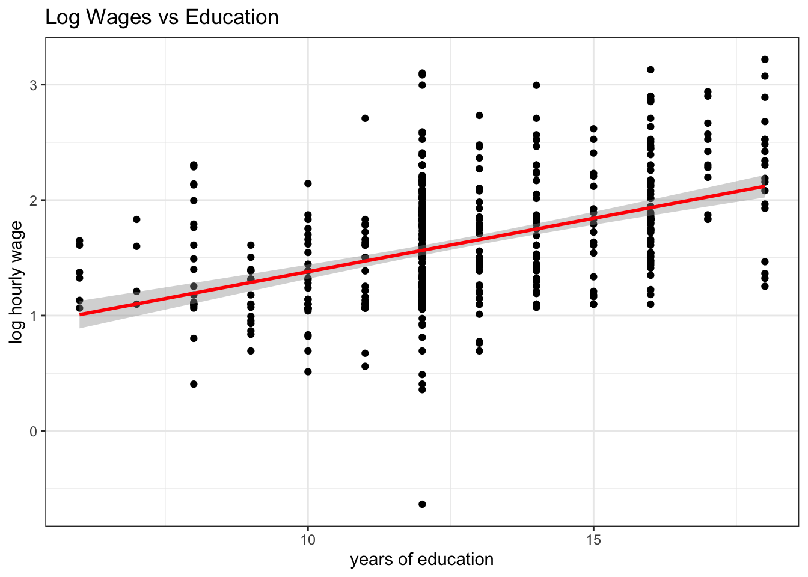
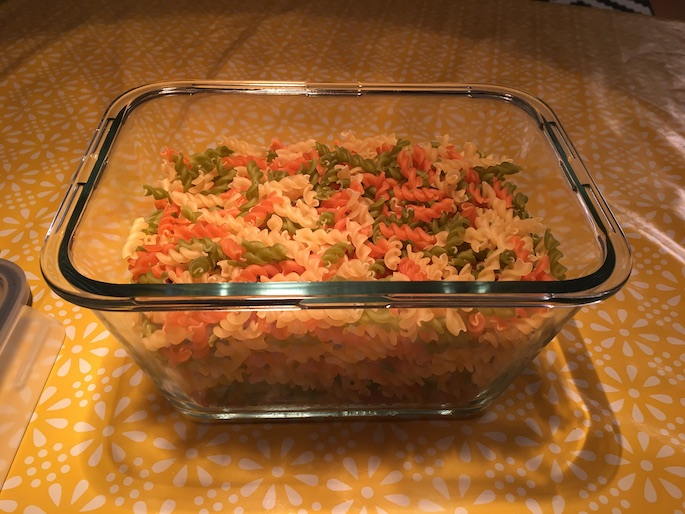
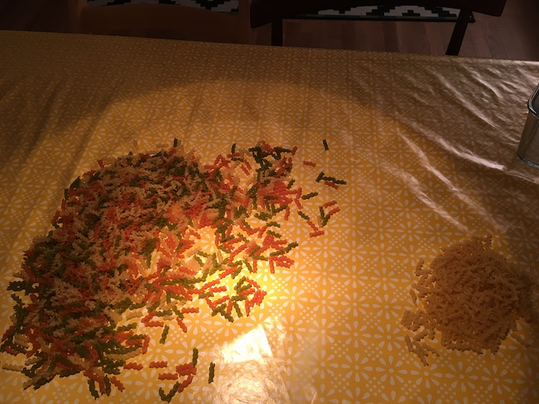
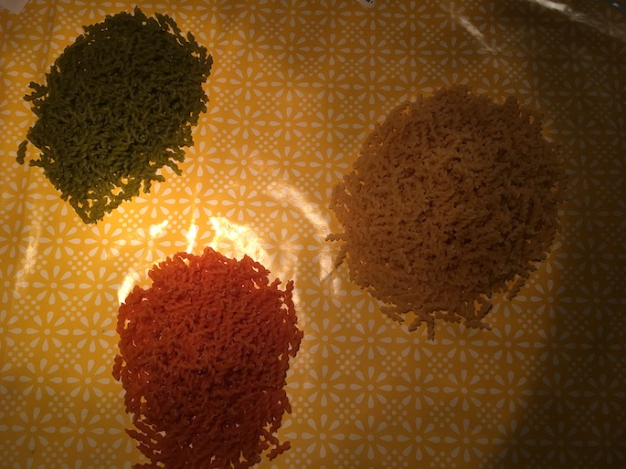
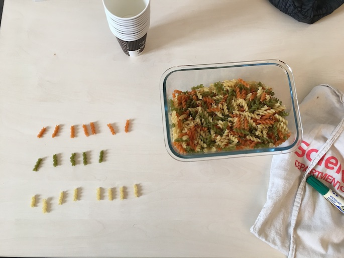
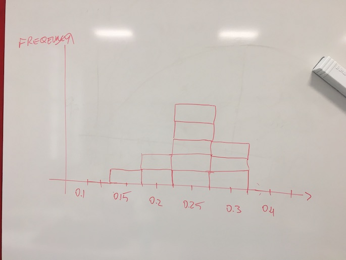
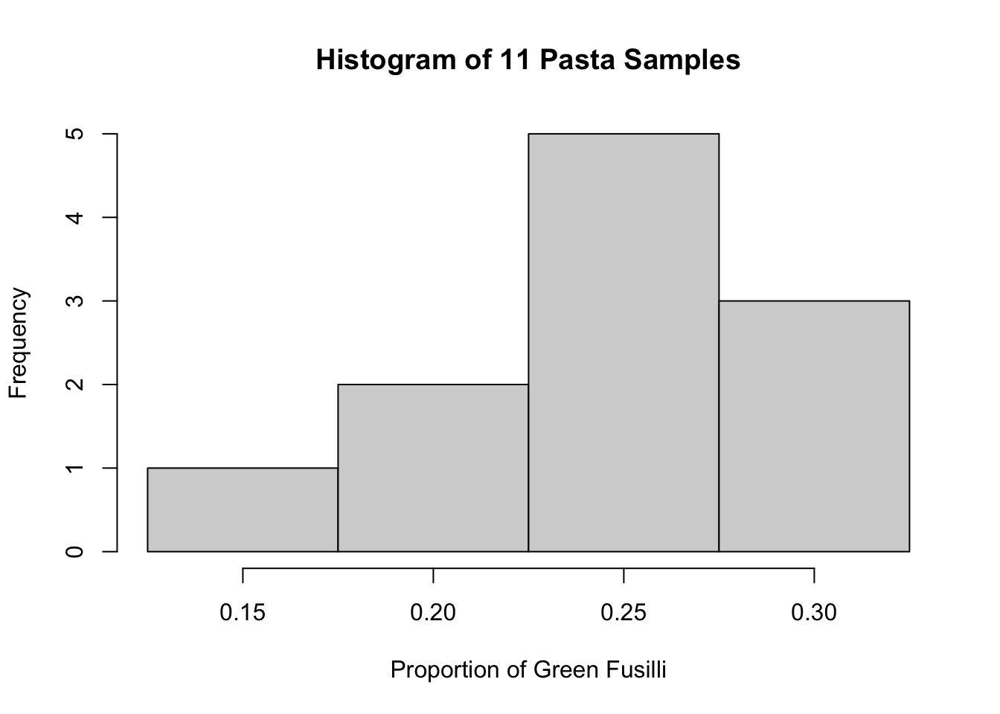
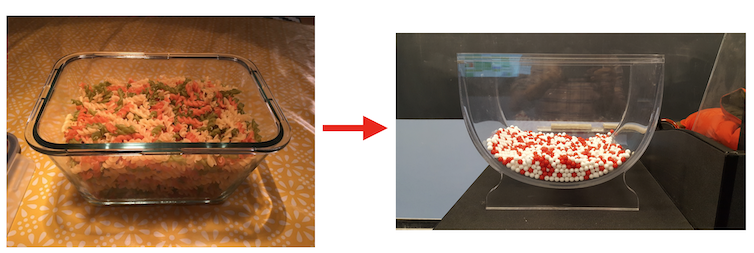
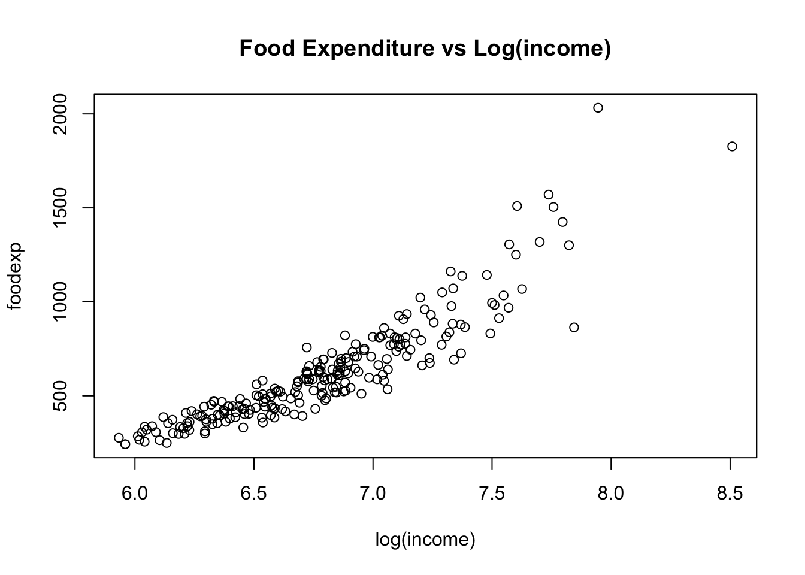

5 Hypothesis Tests
In this chapter we want to investigate uncertainty in regression estimates. We want to understand what the precise meaning of the Std. Error column in a typical regression table is telling us. In terms of a picture, we want to understand better the meaning of the shaded area as in this one here:
In order to fully understand this, we need to go back and make sure we have a good grasp of sampling. Let’s do this first.
5.1 Sampling
In class we were confronted with a jar of Tricolore Fusilli pasta as pictured in Figure 5.2.1 We asked ourselves a question which, secretly, many of you had asked themselves at one point in their lives, namely:
Tip
What is the proportion of green Fusilli in a pack of Tricolore Fusilli?
Well, it’s time to find out.

Let’s call the fusilli in this jar our study population, i.e. the set of units about which we want to learn something. There are several approaches to address the question of how big a proportion in the population the green Fusilli make up. One obvious solution is to enumerate all Fusilli according to their color, and compute their proportion in the entire population. It works perfectly well as a solution, but is a long and arduous process, see Figure 5.3 and Figure 5.4.

Additionally, you may draw worried looks from the people around you, while you are doing it. Maybe this is not the right way to approach this task?2

5.1.1 Taking One Sample From the Population
We started by randomly grabbing a handful of Fusilli from the jar and letting drop exactly N=20 into a paper coffee cup, pictured in Figure 5.5. We call N the sample size. The count and corresponding proportions of each color in this first sample are shown in the following table:
| Color | Count | Proportion |
|---|---|---|
| Red | 7 | 0.35 |
| Green | 5 | 0.25 |
| White | 8 | 0.4 |
So far, so good. We have our first estimate of the population proportion of green Fusilli in the overall population: 0.25. Notice that taking a sample of N=20 was much quicker and much less painful than performing the full count (i.e. the census) of Fusilli performed above.

Then, we put the sample back into the jar, and we reshuffled the Fusilli. Had we taken another sample, again of N=20, would we again have gotten 7 Red, 5 Green, and 8 White, just as in the first sample? Maybe, but maybe not. Suppose we had carried on for several times drawing samples of 20 and counting the colors: Would we also have observed 5 green Fusilli? Definitely not. We would have noted some degree of variability in the proportions computed from our samples. The sample proportions in this case are an example of a sample statistic.
Note
Sampling Variation refers to the fact that if we randomly take samples from a wider population, the random composition of each sample will imply that we obtain statistics that vary - they take on potentially different values in each sample.
Let’s see how this story evolved as we started taking more samples at a time.
5.2 Taking Eleven Samples From The Population
We formed teams of two students in class who would each in turn take samples from the jar (the population) of size N=20, as before. Each team computed the proportion of green Fusilli they had in their sample, and we wrote this data down in a table on the board. Then, we drew a histogram which showed how many samples had fallen into which bins.

We looked at the histogram in Figure 5.6 and we noted several things:
- The largest proportion was 0.3 green.
- The smallest proportion was 0.15 green.
- Most samples found a proportion of 0.25 green fusilli.
- We did think that this looked suspiciously like a normal distribution.
We collected the sample data into a data.frame:
pasta_samples <- data.frame(group = 1:11, replicate = 1:11, prop_green = c(0.3,0.25,0.25,0.3,0.15,0.3,0.25,0.25,0.2,0.25,0.2))
pasta_samples group replicate prop_green
1 1 1 0.30
2 2 2 0.25
3 3 3 0.25
4 4 4 0.30
5 5 5 0.15
6 6 6 0.30
7 7 7 0.25
8 8 8 0.25
9 9 9 0.20
10 10 10 0.25
11 11 11 0.20This produces an associated histogram which looks very much like the one we drew onto the board:

5.2.1 Recap
Let’s recapitulate what we just did. We wanted to know what proportion of Fusilli in the glass jar in Figure 5.2 are green. We acknowledged that an exclusive count, or a census, is a costly and cumbersome exercise, which in most circumstances we will try to avoid. In order to make some progress nonetheless, we took a random sample from the full population in the jar: we randomly selected 20 Fusilli, and looked at the proportion of green ones in there. We found a proportion of 0.25.
After replacing the Fusilli from the first sample in the jar, we asked ourselves if, upon drawing a new sample of 20 Fusilli, we should expect to see the same outcome - and we concluded: maybe, but maybe not. In short, we discovered some random variation from sample to sample. We called this sampling variation.
The purpose of this little activity was three-fold:
- To understand that random samples differ and that there is sampling variation.
- To understand that bigger samples will yield smaller sampling variation.
- To illustrate that the sampling distribution of any statistic (i.e. not only the sample proportion as in our case) computed from a random sample converges to a normal distribution as the sample size increases.
Note
The value of this exercise consisted in making you perform the sampling activity yourself. We will now hand over to the brilliant moderndive package, which will further develop this chapter.
5.3 Handover to Moderndive

The sampling activity in moderndive was performed with red and white balls instead of green fusilli pasta. The rest is identical. We will now read sections 7.2 and 7.3 in their book, as well as chapter 8 on confidence intervals and bootstrapping, and chapter 9 on hypothesis testing.
5.4 Uncertainty in Regression Estimates
In the previous chapters we have seen how the OLS method can produce estimates about intercept and slope coefficients from data. You have seen this method at work in R by using the lm function as well. It is now time to introduce the notion that given that b_0, b_1 (and b_2, in the multiple regression case) are estimates of some unknown population parameters, there is some degree of uncertainty about their values. Another way to say this is that we want some indication about the precision of those estimates. The underlying issue is that the data we have at hand are usually samples from a larger population.
Note
How confident should we be about the estimated values b?
5.5 What is true? What are Statistical Models?
A statistical model is simply a set of assumptions about how some data have been generated. As such, it models the data-generating process (DGP), as we have it in mind. Once we define a DGP, we could simulate data from it and see how this compares to the data we observe in the real world. Or, we could change the parameters of the DGP so as to understand how the real world data would change, could we (or some policy) change the corresponding parameters in reality. Let us now consider one particular statistical model, which in fact we have seen so many times already.
5.6 The Classical Regression Model (CRM)
Let’s bring back our simple model Equation 4.1 to explain this concept, now written for a single observation i and including an error term:
y_i = \beta_0 + \beta_1 x_i + \varepsilon_i \tag{5.1}
The smallest set of assumptions used to define the classical regression model as in Equation 5.1 are the following:
- The data are not linearly dependent: Each variable provides new information for the outcome, and it cannot be replicated as a linear combination of other variables. We have seen this in Chapter 6, in the section on multicolinearity. In the particular case of one regressor, as here, we require that x exhibit some variation in the data, i.e. Var(x)\neq 0.
- The mean of the residuals conditional on x should be zero, E[\varepsilon|x] = 0. Notice that this also means that Cov(\varepsilon,x) = 0, i.e. that the errors and our explanatory variable(s) should be uncorrelated. It is said that x should be strictly exogenous to the model.
These assumptions are necessary to successfully (and correctly!) run an OLS regression. They are often supplemented with an additional set of assumptions, which help with certain aspects of the exposition, but are not strictly necessary:
- The data are drawn from a random sample of size n: observation (x_i,y_i) comes from the exact same distribution, and is independent of observation (x_j,y_j), for all i\neq j.
- The variance of the error term \varepsilon is the same for each value of x: Var(\varepsilon|x) = \sigma^2. This property is called homoskedasticity.
- The error is normally distributed, i.e. \varepsilon \sim \mathcal{N}(0,\sigma^2)
Invoking assumption 5. in particular defines what is commonly called the normal linear regression model.
5.6.1 b is not \beta!
Let’s talk about the small but important modifications we applied to model Equation 4.1 to end up at Equation 5.1 above:
- \beta_0 and \beta_1 are intercept and slope parameters of the population model.
- \varepsilon is the error term.
First, we assumed that Equation 5.1 is the correct representation of the DGP. With that assumption in place, the values \beta_0 and \beta_1 are the true parameter values which generated the data. Notice that \beta_0 and \beta_1 are potentially different from b_0 and b_1 in Equation 4.3 for a given sample of data - they could in practice be very close to each other, but b_0 and b_1 are estimates of \beta_0 and \beta_1. And, crucially, those estimates are generated from a sample of data. Now, the fact that our data \{y_i,x_i\}_{i=1}^N are a sample from a larger population, means that there will be sampling variation in our estimates - exactly like in the case of the sample proportion estimating the population proportion of green Fusilli mentioned above. One particular sample of data will generate one particular set of estimates b_0 and b_1, whereas another sample of data will generate estimates which will in general be different - by how much those estimates differ across samples is the question in this chapter. In general, the more observations we have the greater the precision of our estimates, hence, the closer the estimates from different samples will lie together.
5.6.2 Violating the Assumptions of the CRM
It’s interesting to consider in which circumstances we might violate those assumptions. Let’s give an example for each of them:
No Perfect Collinearity. We have seen in Chapter 6 that perfect collinearity makes it impossible to compute the OLS coefficients, using the example of adding a variable
wtplus = wt + 1to themtcarsdataset together withwt. The resulting coefficient onwtplusisNA, which is the result of the direct linear dependence. (Notice that creatingwtplus2 = (wt + 1)^2would work, since that is not a linear transformation!)Conditional Mean of errors is zero, E[\varepsilon|x] = 0. Going back to our running example in Figure 5.1 about wages and education: Suppose that each individual i in our data has something like innate ability, something we might wish to measure with an IQ-test, however imperfectly. Let’s call it a_i. It seems reasonable to think that high a_i will go together with high wages. At the same time, people with high a_i will find studying for exams and school work much less burdensome than others, hence they might select into obtaining more years of schooling. The problem? Well, there is no a_i in our regression equation - most of the time we don’t have a good measure of it to start with. So it’s an unobserved variable, and as such, it is part of the error term \varepsilon in our model. We will attribute to
educpart of the effect on wages that is actually caused by ability a_i! Sometimes we may be able to reason about whether our estimate oneducis too high or too low, but we will never know its true value. We don’t get the ceteris paribus effect (the true partial derivative ofeduconlwage). Technically, the assumption E[\varepsilon|x] = 0 implies that Cov(\varepsilon,x) = 0, so that’s the part that is violated.Data from Random Sample. One common concern here is that the observations in the data could have been selected in a particular fashion, which would make it less representative of the underlying population. Suppose we had ended up with individuals only from the richest neighborhood of town; our interpretation of the impact of education on wages might not be valid for other areas.
Homoskedasticity. For correct inference (below!), we want to know whether the variance of \varepsilon varies with our explanatory variable x, or not. Here is a typical example where it does:
::: {.cell} ::: {.cell-output-display}

::: :::As income increases, not all people increase their food consumption in an equal way. So Var(\varepsilon|x) will vary with the value of x, hence it won’t be equal to the constant \sigma^2.
Normality. If the distribution of \varepsilon is not normal, it is more cumbersome to derive theoretical results about inference.
5.7 Standard Errors in Theory
The standard deviation of the OLS parameters is generally called standard error. As such, it is just the square root of the parameter’s variance. Under assumptions 1. through 4. above we can define the formula for the variance of our slope coefficient in the context of our single regressor model Equation 5.1 as follows:
Var(b_1|x_i) = \frac{\sigma^2}{\sum_i^N (x_i - \bar{x})^2} \tag{5.2}
In practice, we don’t know the theoretical variance of \varepsilon, i.e. \sigma^2, but we form an estimate of it from our sample of data. A widely used estimate uses the already encountered SSR (sum of squared residuals), and is denoted s^2:
s^2 = \frac{SSR}{n-p} = \frac{\sum_{i=1}^n (y_i - b_0 - b_1 x_i)^2}{n-p} = \frac{\sum_{i=1}^n e_i^2}{n-p}
where n-p are the degrees of freedom available in this estimation. p is the number of parameters we wish to estimate (here: 2, namely b_0 and b_1). So, the variance formula would become
Var(b_1|x_i) = \frac{SSR}{(n-p)\sum_i^N (x_i - \bar{x})^2} \tag{5.3}
We most of the time work directly with the standard error of a coefficient, hence we define
SE(b_1) = \sqrt{Var(b_1|x_i)} = \sqrt{\frac{SSR}{(n-p)\sum_i^N (x_i - \bar{x})^2}} \tag{5.4}
You can clearly see that, as n increases, the denominator increases, and therefore variance and standard error of the estimate will decrease.
This part is largely based on moderndive, to which I am giving full credit hereby. Thanks for this great idea.↩︎
Regardless of the worried onlookers, I did what I had to do and I carried on to count the green pile. I know exactly how many greens are in there now! I then computed the weight of 20 Fusilli (5g), and backed out the number of Fusilli in the other piles. I will declare those numbers as the true numbers. (Sceptics are free to recount.)↩︎